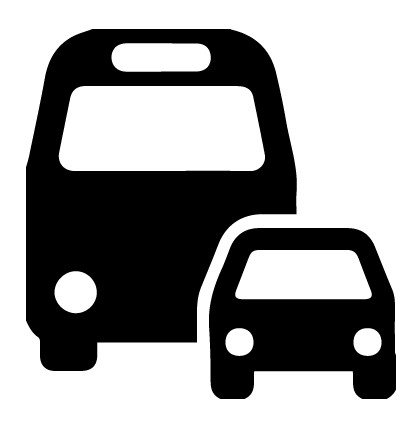

<!DOCTYPE html>
<html lang="es">

<head>
    <meta charset="UTF-8">
    <meta name="viewport" content="width=device-width, initial-scale=1.0">

    <td><button><a href="../index.html">Winfa</a></button></td>
    <button id="ubicacionActualBtn" onclick="obtenerUbicacionActual()"></button>

    <title>Tu Mapa</title>

    <style>
        #map {
            height: 700px;
        }

        .nueva-tabla {
            width: 100%;
            margin-top: 0.5px;
            border-collapse: collapse;
        }

        .nueva-tabla td {
            padding: 0.5px;
            border: 1px solid #ddd;
            text-align: center;
        }

        .nueva-tabla img {
            width: 30px;
            height: auto;
            margin: 0;
        }

        .social-table {
            width: 100%;
            margin-top: 0.5px;
            border-collapse: collapse;
        }

        .social-table td {
            padding: 0.5px;
            border: 1px solid #ddd;
            text-align: center;
        }

        .social-table img {
            width: 30px;
            height: auto;
            margin: 0;
        }

        .horario-dropdown {
            display: none;
            margin-top: 0;
            margin-bottom: 0;
        }

        .horario-button {
            cursor: pointer;
            background-color: #4CAF50;
            color: white;
            border: none;
            padding: 5px 10px;
            text-align: center;
            text-decoration: none;
            display: inline-block;
            font-size: 12px;
            margin: 2px 2px;
            transition-duration: 0.4s;
            cursor: pointer;
            border-radius: 3px;
        }

        .horario-toggle {
            cursor: pointer;
            background-color: #4CAF50;
            color: white;
            border: none;
            padding: 5px 10px;
            text-align: center;
            text-decoration: none;
            display: inline-block;
            font-size: 12px;
            margin: 2px 2px;
            transition-duration: 0.4s;
            cursor: pointer;
            border-radius: 3px;
        }

        .compartir-dropdown {
            display: none;
            margin-top: 0;
            margin-bottom: 0;
        }

        .compartir-button {
            cursor: pointer;
            background-color: #007BFF;
            color: white;
            border: none;
            padding: 5px 10px;
            text-align: center;
            text-decoration: none;
            display: inline-block;
            font-size: 12px;
            margin: 2px 2px;
            transition-duration: 0.4s;
            cursor: pointer;
            border-radius: 3px;
        }
    </style>

    <!-- Agrega Leaflet CSS -->
    <link rel="stylesheet" href="https://unpkg.com/leaflet/dist/leaflet.css" />
</head>

<body>

    <!-- Contenido principal de tu página -->
    <div id="map"></div>

    <!-- Agrega Leaflet JS -->
    <script src="https://unpkg.com/leaflet/dist/leaflet.js"></script>

    <script>
        document.addEventListener('DOMContentLoaded', function () {
            var map = L.map('map');
            var userMarker;

            if (navigator.geolocation) {
                navigator.geolocation.getCurrentPosition(function (position) {
                    var userLocation = [position.coords.latitude, position.coords.longitude];

                    L.tileLayer('https://{s}.tile.openstreetmap.org/{z}/{x}/{y}.png', {
                        attribution: '© OpenStreetMap contributors'
                    }).addTo(map);

                    userMarker = L.marker(userLocation, {
                            draggable: true
                        })
                        .addTo(map)
                        .bindPopup("Tu ubicación actual")
                        .openPopup();

                    // Grupos de capas
                    var grupos = {
                        Agricultura: L.layerGroup(),
                        Manufactura: L.layerGroup(),
                        Servicios: L.layerGroup()
                    };

                    // Datos de marcadores (reemplaza estos datos con los tuyos)
                    var marcadores = {
                        Agricultura: [],
                        Manufactura: [],
                        Servicios: [{
                                latitud: -19.053839,
                                longitud: -65.253089,
                                sigla: "Calle de los gatos",
                                nombre: "",
                                horario: {
                                    Lunes: "00:00 - 24:00",
                                    Martes: "00:00 - 24:00",
                                    Miércoles: "00:00 - 24:00",
                                    Jueves: "00:00 - 24:00",
                                    Viernes: "00:00 - 24:00",
                                    Sabado: "00:00 - 24:00",
                                    Domingo: "00:00 - 24:00"
                                },
                                direccion: "Calle: Gato Negro",
                                origen: "Sucre - Chuquisaca - Bolivia",
                                facebook: null,
                                whatsapp: null,
                                tiktok: null,
                                sitioWeb: null,
                                correo: null,
                                videopresentacion: "https://vm.tiktok.com/ZM6QXV1nS/",
                                ecommerce: null,
                                promocion: null,
                                transporte: null,
                                foto: "Edificios/calle de los gatos.jpg"
                            },
                            // Otros marcadores...
                        ]
                    };

                    // Agrega marcadores a los grupos de capas
                    Object.keys(grupos).forEach(grupo => {
                        marcadores[grupo].forEach(marcador => {
                            // Genera la tabla de redes sociales según lo que tiene el marcador
                            var socialTableContent = `<table class="social-table"><tr>`;
                            if (marcador.facebook) {
                                socialTableContent += `<td><a href="${marcador.facebook}" target="_blank"></a></td>`;
                            }
                            if (marcador.whatsapp) {
                                socialTableContent += `<td><a href="${marcador.whatsapp}" target="_blank"></a></td>`;
                            }
                            if (marcador.tiktok) {
                                socialTableContent += `<td><a href="${marcador.tiktok}" target="_blank"></a></td>`;
                            }
                            if (marcador.sitioWeb) {
                                socialTableContent += `<td><a href="${marcador.sitioWeb}" target="_blank"></a></td>`;
                            }
                            if (marcador.correo) {
                                socialTableContent += `<td><a href="${marcador.correo}" target="_blank"></a></td>`;
                            }
                            socialTableContent += `</tr></table>`;
                            // Genera la nueva tabla de información
                            var nuevaTablaContent = `<table class="nueva-tabla"><tr>`;
                            if (marcador.videopresentacion) {
                                nuevaTablaContent += `<td><a href="${marcador.videopresentacion}" target="_blank"></a></td>`;
                            }
                            if (marcador.transporte) {
                                nuevaTablaContent += `<td><a href="${marcador.transporte}" target="_blank"></a></td>`;
                            }
                            if (marcador.ecommerce) {
                                nuevaTablaContent += `<td><a href="${marcador.ecommerce}" target="_blank"></a></td>`;
                            }
                            if (marcador.promocion) {
                                nuevaTablaContent += `<td><a href="${marcador.promocion}" target="_blank"></a></td>`;
                            }
                            nuevaTablaContent += `</tr></table>`;
                            // Genera el contenido del horario desplegable como botón
                            var horarioDropdownContent = '<div class="horario-dropdown">';
                            Object.keys(marcador.horario).forEach(dia => {
                                horarioDropdownContent += `<button class="horario-button">${dia}: ${marcador.horario[dia]}</button>`;
                            });
                            horarioDropdownContent += '</div>';

                            var popupContent = `
                                <div style="max-width: 300px;">
                                    <h3 style="margin: 0;">${marcador.sigla}</h3>
                                    <p style="margin: 5px 0 0;">${marcador.nombre}</p>
                                    <div class="horario-toggle" onclick="toggleHorario(this)">Horario</div>
                                    ${horarioDropdownContent}
                                    <p style="margin: 0;"><strong>Dirección:</strong> ${marcador.direccion}</p>
                                    <p style="margin: 0;"><strong>Origen:</strong> ${marcador.origen}</p>
                                    ${nuevaTablaContent} <!-- Tabla de información -->
                                    
                                    ${socialTableContent} <!-- Tabla de redes sociales -->
                                    <button id="compartirBtn" onclick="compartir('${marcador.sigla}', ${marcador.latitud}, ${marcador.longitud})">Compartir</button>
                                </div>
                            `;

                            var marcadorLayer = L.marker([marcador.latitud, marcador.longitud], {
                                title: marcador.sigla
                            }).bindPopup(popupContent);

                            grupos[grupo].addLayer(marcadorLayer);
                        });
                    });
                    // Añade los grupos de capas al mapa
                    Object.keys(grupos).forEach(grupo => {
                        map.addLayer(grupos[grupo]);
                    });

                    // Añade el control de capas al mapa
                    L.control.layers(null, grupos, {
                        collapsed: false
                    }).addTo(map);
                    // Ajusta el zoom y centra el mapa en la ubicación del usuario
                    map.setView(userLocation, 16);
                    map.setView(userLocation, 16);

                    // Verifica si hay parámetros de la URL y utiliza esos valores
                    var params = new URLSearchParams(window.location.search);
                    var marker = params.get('marker');
                    var lat = parseFloat(params.get('lat'));
                    var lng = parseFloat(params.get('lng'));

                    if (marker && !isNaN(lat) && !isNaN(lng)) {
                        // Si hay parámetros válidos, establece el mapa en la ubicación del marcador
                        map.setView([lat, lng], 16);
                    }
                    // Evento de arrastre del marcador de usuario para actualizar la distancia
                    userMarker.on('drag', function (event) {
                        actualizarDistancias();
                    });

                    function actualizarDistancias() {
                        Object.keys(grupos).forEach(grupo => {
                            grupos[grupo].eachLayer(function (m) {
                                var distancia = userMarker.getLatLng().distanceTo(m.getLatLng());
                                document.getElementById('distancia-' + m.options.title).innerText = `Distancia: ${distancia.toFixed(2)} metros`;
                            });
                        });
                    };

                });
            } else {
                map.setView([0, 0], 2);
                L.tileLayer('https://{s}.tile.openstreetmap.org/{z}/{x}/{y}.png', {
                    attribution: '© OpenStreetMap contributors'
                }).addTo(map);
            }
        });

        function compartir(sigla, latitud, longitud) {
    // Construir el enlace
    var enlace = window.location.origin + window.location.pathname + '?marker=' + encodeURIComponent(sigla) + '&lat=' + encodeURIComponent(latitud) + '&lng=' + encodeURIComponent(longitud);

    // Crear el enlace de WhatsApp
    var enlaceWhatsApp = 'https://api.whatsapp.com/send?text=' + encodeURIComponent(enlace);

    // Abrir enlace en una nueva ventana o pestaña
    window.open(enlaceWhatsApp, '_blank');
}


        function toggleHorario(element) {
            var horarioDropdown = element.nextElementSibling;
            horarioDropdown.style.display = horarioDropdown.style.display === 'none' ? 'block' : 'none';
        }
    </script>
</body>

</html>
